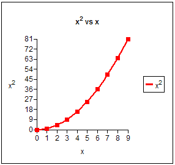
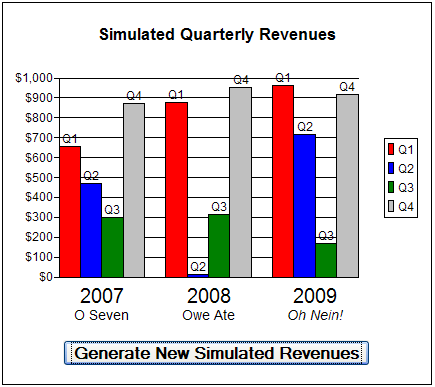
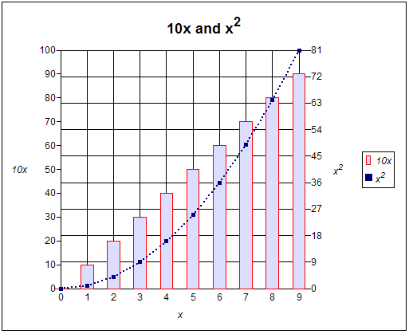
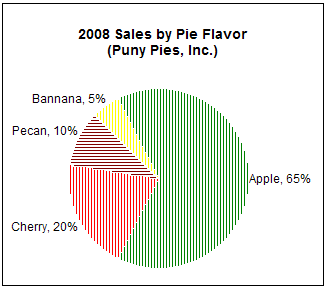
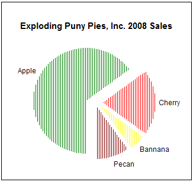
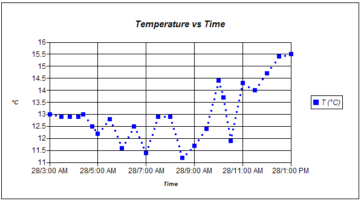
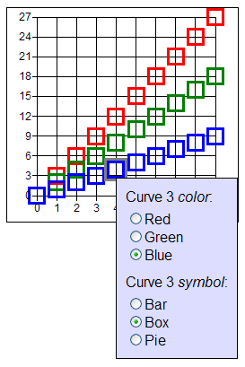
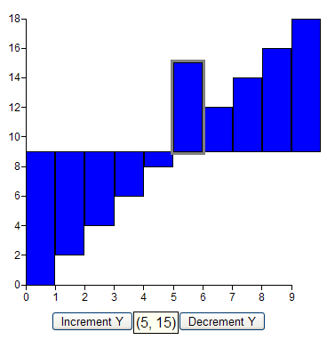
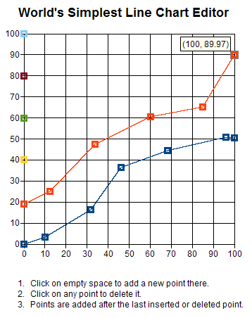

| Code | Chart |
|---|
package com.googlecode.gchart.gcharttestapp.client;
import com.googlecode.gchart.client.GChart;
/**
* Defines a scatter-plot of x*x vs. x.
*/
public class GChartExample00 extends GChart {
GChartExample00() {
setChartTitle("<b>x<sup>2</sup> vs x</b>");
setChartSize(150, 150);
addCurve();
for (int i = 0; i < 10; i++)
getCurve().addPoint(i,i*i);
getCurve().setLegendLabel("x<sup>2</sup>");
getXAxis().setAxisLabel("x");
getYAxis().setAxisLabel("x<sup>2</sup>");
}
}
|

|
package com.googlecode.gchart.gcharttestapp.client;
import com.googlecode.gchart.client.GChart;
/**
* Defines a line-plot of x*x vs. x, with dotted connecting lines.
*/
public class GChartExample00a extends GChart {
GChartExample00a() {
setChartTitle("<b>x<sup>2</sup> vs x</b>");
setChartSize(150, 150);
addCurve();
// 2 pixel square connecting dots, spaced 5 pixels apart:
getCurve().getSymbol().setFillThickness(2);
getCurve().getSymbol().setFillSpacing(5);
for (int i = 0; i < 10; i++)
getCurve().addPoint(i,i*i);
getCurve().setLegendLabel("x<sup>2</sup>");
getXAxis().setAxisLabel("x");
getYAxis().setAxisLabel("x<sup>2</sup>");
}
}
|

|
package com.googlecode.gchart.gcharttestapp.client;
import com.googlecode.gchart.client.GChart;
/**
* Defines a line-plot of x*x vs. x, with solid connecting lines.
*
* Note: This chart uses the built-in HTML-element based line
* rendering. As of GChart 2.5, faster drawn, better looking,
* solid connecting lines can be produced by plugging an external
* canvas library into GChart. See the <tt>setCanvasFactory</tt>
* method's javadocs for the details, and the sine + cosine chart
* on GChart's live demo for a complete working example.
*
*/
public class GChartExample00b extends GChart {
GChartExample00b() {
setChartTitle("<b>x<sup>2</sup> vs x</b>");
setChartSize(150, 150);
addCurve();
// solid, 2px thick, 1px resolution, connecting lines:
getCurve().getSymbol().setSymbolType(SymbolType.LINE);
getCurve().getSymbol().setFillThickness(2);
getCurve().getSymbol().setFillSpacing(1);
// Make center-fill of square point markers same color as line:
getCurve().getSymbol().setBackgroundColor(
getCurve().getSymbol().getBorderColor());
for (int i = 0; i < 10; i++)
getCurve().addPoint(i,i*i);
getCurve().setLegendLabel("x<sup>2</sup>");
getXAxis().setAxisLabel("x");
getYAxis().setAxisLabel("x<sup>2</sup>");
}
}
|

|
package com.googlecode.gchart.gcharttestapp.client;
import com.googlecode.gchart.client.GChart;
/**
* Defines a bar-chart of x*x vs. x, with gridlines.
*/
public class GChartExample01 extends GChart {
GChartExample01() {
setChartTitle("<b>x<sup>2</sup> vs x</b>");
setChartSize(150, 150);
addCurve();
for (int i = 0; i < 10; i++)
getCurve().addPoint(i,i*i);
getCurve().setLegendLabel("x<sup>2</sup>");
getCurve().getSymbol().setSymbolType(SymbolType.VBAR_SOUTH);
getCurve().getSymbol().setBackgroundColor("red");
getCurve().getSymbol().setBorderColor("black");
getCurve().getSymbol().setModelWidth(1.0);
getXAxis().setAxisLabel("<b>x</b>");
getXAxis().setHasGridlines(true);
getYAxis().setAxisLabel("<b>x<sup>2</sup></b>");
getYAxis().setHasGridlines(true);
}
}
|

|
package com.googlecode.gchart.gcharttestapp.client;
import com.googlecode.gchart.client.GChart;
/**
* Defines an area-chart of x*x vs. x, with gridlines.
* <p>
*
* Note: This chart uses GChart's built-in HTML-element based
* area chart rendering. As of GChart 2.5, faster drawn, better
* looking, area charts can be produced by plugging an external
* canvas library into GChart. See the <tt>setCanvasFactory</tt>
* method's javadocs for the details, and the oil price
* simulation chart on GChart's live demo for a complete working
* example.
*
*/
public class GChartExample01a extends GChart {
GChartExample01a(int fillSpacing) {
setChartTitle("<b>x<sup>2</sup> vs x</b>");
setChartSize(150, 150);
addCurve();
for (int i = 0; i < 10; i++)
getCurve().addPoint(i,i*i);
getCurve().setLegendLabel("x<sup>2</sup>");
getCurve().getSymbol().setSymbolType(SymbolType.VBAR_SOUTHEAST);
getCurve().getSymbol().setBackgroundColor("red");
getCurve().getSymbol().setBorderColor("gray");
getCurve().getSymbol().setBorderWidth(fillSpacing==0?1:0);
// 3px is a little jaggy, but it uses 3 times less elements than 1px
getCurve().getSymbol().setWidth(fillSpacing);
getCurve().getSymbol().setFillThickness(Math.max(1, fillSpacing));
getCurve().getSymbol().setFillSpacing(fillSpacing);
getXAxis().setAxisLabel("<b>x</b>");
getXAxis().setHasGridlines(true);
getYAxis().setAxisLabel("<b>x<sup>2</sup></b>");
getYAxis().setHasGridlines(true);
}
}
|

|
package com.googlecode.gchart.gcharttestapp.client;
import com.google.gwt.event.dom.client.ClickEvent;
import com.google.gwt.event.dom.client.ClickHandler;
import com.google.gwt.user.client.ui.Button;
import com.googlecode.gchart.client.GChart;
/**
* Defines a traditional "quarterly revenues" grouped bar-chart.
*/
public class GChartExample02 extends GChart {
final String[] groupLabels = {
"<html>2007<br><small><small>O Seven",
"<html>2008<br><small><small>Owe Ate",
"<html>2009<br><i><small><small>Oh Nein!"};
final String[] barLabels = {
"Q1", "Q2", "Q3", "Q4"};
final String[] barColors = {
"red", "blue", "green", "silver"};
final int MAX_REVENUE = 1000;
final int WIDTH = 300;
final int HEIGHT = 200;
Button updateButton = new Button(
"<b><big>Generate New Simulated Revenues</big></b>");
public GChartExample02() {
setChartSize(WIDTH, HEIGHT);
setChartTitle("<b><big><big>" +
"Simulated Quarterly Revenues" +
"</big></big><br> </b>");
updateButton.addClickHandler(new ClickHandler() {
public void onClick(ClickEvent event) {
for (int iCurve=0; iCurve < getNCurves(); iCurve++) {
for (int iPoint=0;
iPoint < getCurve(iCurve).getNPoints();
iPoint++) {
getCurve(iCurve).getPoint(iPoint).setY(
Math.random()*MAX_REVENUE);
}
}
update();
updateButton.setFocus(true);
}
});
setChartFootnotes(updateButton);
for (int iCurve=0; iCurve < barLabels.length; iCurve++) {
addCurve(); // one curve per quarter
getCurve().getSymbol().setSymbolType(
SymbolType.VBAR_SOUTHWEST);
getCurve().getSymbol().setBackgroundColor(barColors[iCurve]);
getCurve().setLegendLabel(barLabels[iCurve]);
getCurve().getSymbol().setHovertextTemplate(
GChart.formatAsHovertext(barLabels[iCurve] + " revenue=${y}"));
getCurve().getSymbol().setModelWidth(1.0);
getCurve().getSymbol().setBorderColor("black");
getCurve().getSymbol().setBorderWidth(1);
for (int jGroup=0; jGroup < groupLabels.length; jGroup++) {
// the '+1' creates a bar-sized gap between groups
getCurve().addPoint(1+iCurve+jGroup*(barLabels.length+1),
Math.random()*MAX_REVENUE);
getCurve().getPoint().setAnnotationText(barLabels[iCurve]);
getCurve().getPoint().setAnnotationLocation(
AnnotationLocation.NORTH);
}
}
for (int i = 0; i < groupLabels.length; i++) {
// formula centers tick-label horizontally on each group
getXAxis().addTick(
barLabels.length/2. + i*(barLabels.length+1),
groupLabels[i]);
}
getXAxis().setTickLabelFontSize(20);
getXAxis().setTickLabelThickness(40);
getXAxis().setTickLength(6); // small tick-like gap...
getXAxis().setTickThickness(0); // but with invisible ticks
getXAxis().setAxisMin(0); // keeps first bar on chart
getYAxis().setAxisMin(0); // Based on sim revenue range
getYAxis().setAxisMax(MAX_REVENUE); // of 0 to MAX_REVENUE.
getYAxis().setTickCount(11);
getYAxis().setHasGridlines(true);
getYAxis().setTickLabelFormat("$#,###");
}
}
|

|
package com.googlecode.gchart.gcharttestapp.client;
import com.googlecode.gchart.client.GChart;
/**
* Defines a chart with a scatterplot on one y-axis, and a
* barchart on the other.
*/
public class GChartExample03 extends GChart {
public GChartExample03() {
setChartTitle("<h2>10x and x<sup>2</sup></h2>");
setChartSize(300, 300);
addCurve();
getCurve().setLegendLabel("<i>10x</i>");
getCurve().setYAxis(Y_AXIS);
getCurve().getSymbol().setSymbolType(SymbolType.VBAR_SOUTH);
getCurve().getSymbol().setBackgroundColor("#DDF");
getCurve().getSymbol().setBorderColor("red");
getCurve().getSymbol().setBorderWidth(1);
getCurve().getSymbol().setModelWidth(0.5);
for (int i=0; i < 10; i++) {
getCurve().addPoint(i,i*10);
}
addCurve();
getCurve().setLegendLabel("<i>x<sup>2</sup></i>");
getCurve().setYAxis(Y2_AXIS);
getCurve().getSymbol().setSymbolType(SymbolType.BOX_CENTER);
getCurve().getSymbol().setWidth(5);
getCurve().getSymbol().setHeight(5);
getCurve().getSymbol().setBorderWidth(0);
getCurve().getSymbol().setBackgroundColor("navy");
getCurve().getSymbol().setFillThickness(2);
getCurve().getSymbol().setFillSpacing(5);
for (int i=0; i < getCurve(0).getNPoints(); i++) {
getCurve().addPoint(i,i*i);
}
getXAxis().setAxisLabel("<i>x</i>");
getXAxis().setHasGridlines(true);
getXAxis().setTickThickness(0); // hide tick marks...
getXAxis().setTickLength(3); // but leave a small gap
getYAxis().setAxisLabel("<i>10x</i>");
getYAxis().setAxisMax(100);
getYAxis().setTickLabelFormat("#.#");
getYAxis().setTickCount(11);
getY2Axis().setAxisLabel("<i>x<sup>2</sup></i>");
getY2Axis().setHasGridlines(true);
// last bar 'sticks out' over right edge, so extend 'grid' right:
getY2Axis().setTickLength(15);
}
}
|

|
package com.googlecode.gchart.gcharttestapp.client;
import com.googlecode.gchart.client.GChart;
/**
* Defines a traditional "semi-log" chart by using custom
* ticks on the y axis, in conjunction with log-transformed
* y data.
*/
public class GChartExample04 extends GChart {
// GWT 1.4's Math class does not include JDK's
// Math.log10--so emulate it.
private static double log10(double x) {
return Math.log(x)/Math.log(10.0);
}
public GChartExample04() {
super(300, 450);
setChartTitle("<h2>2<sup>x</sup> vs x</h2>");
addCurve();
getCurve().getSymbol().setHovertextTemplate(
GChart.formatAsHovertext("${y}=2^${x}"));
getCurve().setLegendLabel("<b>2<sup>x</sup></b>");
getCurve().getSymbol().setBackgroundColor("red");
getCurve().getSymbol().setBorderColor("black");
getCurve().getSymbol().setWidth(9);
getCurve().getSymbol().setHeight(9);
// add (log10-transformed) powers of 2 from 1/4 to 8
for (int i=-2; i < 4; i++)
getCurve().addPoint(i,log10(Math.pow(2,i)));
// GChart's "=10^" NumberFormat prefix inverts the log10
// transform
getYAxis().setTickLabelFormat("=10^#.##");
// add conventional log-scaled ticks from .1 to 10
getYAxis().addTick(log10(0.1));
for (double x=0.1; x < 10; x*=10)
for (int y = 2; y <= 10; y++)
getYAxis().addTick(log10(x*y));
getXAxis().setAxisLabel("<b>x</b>");
getXAxis().setHasGridlines(true);
getXAxis().setTickCount(6);
getYAxis().setAxisLabel("<b>2<sup>x</sup></b>");
getYAxis().setHasGridlines(true);
}
}
|

|
package com.googlecode.gchart.gcharttestapp.client;
import com.googlecode.gchart.client.GChart;
/**
* Defines a "square pie chart", that is, a
* fat, axes-free, stacked bar chart that is
* often an acceptable alternative to a pie-chart.
* <p>
*
* Even though, as of version 2.0, GChart also supports
* round pie charts, square pie charts are still
* much more efficient.
*
*/
public class GChartExample06 extends GChart {
GChartExample06() {
setChartTitle("<b><i>Market Share by Region</i></b>");
final int SIZE = 200;
setChartSize(SIZE, SIZE);
final String[] region =
{"USA", "Canada", "Mexico", "India", "France", "Iceland"};
// elements in this array must sum to 100.
final double[] percent = {35, 25, 15, 10, 10, 5};
final String[] colors =
{"red", "green", "yellow", "fuchsia", "silver", "aqua"};
double sum = 0;
for (int i = percent.length-1; i >= 0; i--) {
addCurve();
getCurve().getSymbol().setSymbolType(
SymbolType.BOX_SOUTHEAST);
getCurve().getSymbol().setModelHeight(percent[i]);
getCurve().getSymbol().setBackgroundColor(colors[i]);
getCurve().getSymbol().setBorderColor(colors[i]);
getCurve().getSymbol().setWidth(SIZE);
getCurve().getSymbol().setHoverAnnotationSymbolType(
SymbolType.ANCHOR_MOUSE_SNAP_TO_Y);
getCurve().getSymbol().setHoverLocation(
AnnotationLocation.SOUTHEAST);
getCurve().getSymbol().setHovertextTemplate(
GChart.formatAsHovertext(region[i] + ", " + percent[i] + "%"));
getCurve().setLegendLabel(region[i]);
getCurve().addPoint(0, 100-sum);
getCurve().getPoint().setAnnotationText(region[i]);
getCurve().getPoint().setAnnotationFontWeight("bold");
getCurve().getPoint().setAnnotationLocation(
AnnotationLocation.CENTER);
sum += percent[i];
}
getXAxis().setTickCount(0);
getXAxis().setTickThickness(0);
getXAxis().setAxisMin(0);
getXAxis().setAxisMax(SIZE);
getYAxis().setTickCount(0);
getYAxis().setTickThickness(0);
getYAxis().setAxisMin(0);
getYAxis().setAxisMax(100);
}
}
|

|
package com.googlecode.gchart.gcharttestapp.client;
import com.googlecode.gchart.client.GChart;
/** Basic pie chart
* <p>
*
* This chart uses the built-in HTML-element based pie chart
* rendering. As of GChart 2.5, faster drawn, better
* looking, solid-filled pie slices can be produced by
* plugging an external canvas library into GChart. See the
* <tt>setCanvasFactory</tt> method's javadocs for the
* details, and the various pie charts on GChart's live demo
* for complete working examples.
*
*/
public class GChartExample07 extends GChart {
GChartExample07() {
double[] pieMarketShare = {0.65,0.20,0.10,0.05};
String[] pieTypes = {"Apple", "Cherry", "Pecan", "Bannana"};
String[] pieColors = {"green", "red", "maroon", "yellow"};
this.setChartSize(300, 200);
setChartTitle("<h3>2008 Sales by Pie Flavor" +
"<br>(Puny Pies, Inc.) </h3>");
this.setLegendVisible(false);
getXAxis().setAxisVisible(false);
getYAxis().setAxisVisible(false);
getXAxis().setAxisMin(0);
getXAxis().setAxisMax(10);
getXAxis().setTickCount(0);
getYAxis().setAxisMin(0);
getYAxis().setAxisMax(10);
getYAxis().setTickCount(0);
// this line orients the center of the first slice (apple) due east
setInitialPieSliceOrientation(0.75 - pieMarketShare[0]/2);
for (int i=0; i < pieMarketShare.length; i++) {
addCurve();
getCurve().addPoint(5,5);
getCurve().getSymbol().setSymbolType(
SymbolType.PIE_SLICE_OPTIMAL_SHADING);
getCurve().getSymbol().setBorderColor("white");
getCurve().getSymbol().setBackgroundColor(pieColors[i]);
// next two lines define pie diameter in x-axis model units
getCurve().getSymbol().setModelWidth(6);
getCurve().getSymbol().setHeight(0);
getCurve().getSymbol().setFillSpacing(3);
getCurve().getSymbol().setFillThickness(3);
getCurve().getSymbol().setHovertextTemplate(
GChart.formatAsHovertext(pieTypes[i] + ", " +
Math.round(100*pieMarketShare[i])+"%"));
getCurve().getSymbol().setPieSliceSize(pieMarketShare[i]);
getCurve().getPoint().setAnnotationText(pieTypes[i]);
getCurve().getPoint().setAnnotationLocation(
AnnotationLocation.OUTSIDE_PIE_ARC);
}
}
}
|

|
package com.googlecode.gchart.gcharttestapp.client;
import com.googlecode.gchart.client.GChart;
/** "Exploded pie" example*/
public class GChartExample08 extends GChart {
GChartExample08() {
double[] pieMarketShare = {0.65,0.20,0.05,0.10};
String[] pieTypes = {"Apple", "Cherry", "Bannana", "Pecan"};
String[] pieColors = {"green", "red", "yellow", "maroon"};
this.setChartSize(300, 200);
setChartTitle(
"<b><big>Exploding Puny Pies, Inc. 2008 Sales</b></big>");
setPadding("10px 0px 0px 0px");
getXAxis().setHasGridlines(false);
this.setLegendVisible(false);
getXAxis().setAxisVisible(false);
getXAxis().setAxisMin(0);
getXAxis().setAxisMax(10);
getXAxis().setTickLength(30); // adds a little spacing
getXAxis().setTickCount(0);
getYAxis().setAxisMin(0);
getYAxis().setAxisMax(10);
getYAxis().setTickCount(0);
getYAxis().setAxisVisible(false);
double orientation = 0;
for (int i=0; i < pieMarketShare.length; i++) {
addCurve();
// adjust slice center to create "exploding" slices
final double explodingXRadius = 0.48;
final double explodingYRadius = 0.32;
double theta = 3*Math.PI/2
- 2*Math.PI*(orientation + pieMarketShare[i]/2.0);
getCurve().addPoint(5+explodingXRadius*Math.cos(theta),
5+explodingYRadius*Math.sin(theta));
getCurve().getSymbol().setSymbolType(
SymbolType.PIE_SLICE_OPTIMAL_SHADING);
getCurve().getSymbol().setBorderColor("white");
getCurve().getSymbol().setBackgroundColor(pieColors[i]);
// next two lines define pie diameter as 6 x-axis model units
getCurve().getSymbol().setModelWidth(6);
getCurve().getSymbol().setHeight(0);
getCurve().getSymbol().setFillSpacing(3);
getCurve().getSymbol().setFillThickness(3);
getCurve().getSymbol().setHovertextTemplate(
GChart.formatAsHovertext(
pieTypes[i] + ", " + Math.round(100*pieMarketShare[i])+"%"));
getCurve().getSymbol().setPieSliceOrientation(orientation);
getCurve().getSymbol().setPieSliceSize(pieMarketShare[i]);
getCurve().getPoint().setAnnotationText(pieTypes[i]);
getCurve().getPoint().setAnnotationLocation(
AnnotationLocation.OUTSIDE_PIE_ARC);
// add a 5px gap between label and pie slice
getCurve().getPoint().setAnnotationXShift(5);
orientation = (orientation + pieMarketShare[i]) % 1.0;
}
}
}
|

|
package com.googlecode.gchart.gcharttestapp.client;
import java.util.Date;
import com.googlecode.gchart.client.GChart;
/** Simple time sequence example with date-time x-axis labels */
public class GChartExample12 extends GChart {
static class DateStampedValue {
Date date;
double value;
public DateStampedValue(String dateTimeString, double value) {
this.date = new Date(dateTimeString);
this.value = value;
}
}
// Data from Malcolm Gorman's GWT forum post:
// http://groups.google.com/group/Google-Web-Toolkit/msg/6125ce39fd2339ac
DateStampedValue[] dateSequence = {
new DateStampedValue("1/28/2008 03:00", 13.0),
new DateStampedValue("1/28/2008 03:30", 12.9),
new DateStampedValue("1/28/2008 03:51", 12.9),
new DateStampedValue("1/28/2008 04:11", 12.9),
new DateStampedValue("1/28/2008 04:24", 13.0),
new DateStampedValue("1/28/2008 04:46", 12.5),
new DateStampedValue("1/28/2008 05:00", 12.2),
new DateStampedValue("1/28/2008 05:30", 12.8),
new DateStampedValue("1/28/2008 06:00", 11.6),
new DateStampedValue("1/28/2008 06:30", 12.5),
new DateStampedValue("1/28/2008 07:00", 11.4),
new DateStampedValue("1/28/2008 07:30", 12.9),
new DateStampedValue("1/28/2008 08:00", 12.9),
new DateStampedValue("1/28/2008 08:30", 11.2),
new DateStampedValue("1/28/2008 09:00", 11.7),
new DateStampedValue("1/28/2008 09:30", 12.4),
new DateStampedValue("1/28/2008 10:00", 14.4),
new DateStampedValue("1/28/2008 10:12", 13.7),
new DateStampedValue("1/28/2008 10:30", 11.9),
new DateStampedValue("1/28/2008 11:00", 14.3),
new DateStampedValue("1/28/2008 11:30", 14.0),
new DateStampedValue("1/28/2008 12:00", 14.7),
new DateStampedValue("1/28/2008 12:30", 15.4),
new DateStampedValue("1/28/2008 13:00", 15.5),
};
GChartExample12() {
super(400,200);
setChartTitle("<b><i><big>Temperature vs Time</big></i></b>");
setPadding("5px");
getXAxis().setAxisLabel("<small><b><i>Time</i></b></small>");
getXAxis().setHasGridlines(true);
getXAxis().setTickCount(6);
// Except for "=(Date)", a standard GWT DateTimeFormat string
getXAxis().setTickLabelFormat("=(Date)dd/h:mm a");
getYAxis().setAxisLabel("<small><b><i>°C</i></b></small>");
getYAxis().setHasGridlines(true);
getYAxis().setTickCount(11);
getYAxis().setAxisMin(11);
getYAxis().setAxisMax(16);
addCurve();
getCurve().setLegendLabel("<i>T (°C)</i>");
getCurve().getSymbol().setBorderColor("blue");
getCurve().getSymbol().setBackgroundColor("blue");
getCurve().getSymbol().setFillSpacing(10);
getCurve().getSymbol().setFillThickness(3);
for (int i = 0; i < dateSequence.length; i++)
// Note that getTime() returns milliseconds since
// 1/1/70--required whenever "date cast" tick label
// formats (those beginning with "=(Date)") are used.
getCurve().addPoint(dateSequence[i].date.getTime(),
dateSequence[i].value);
}
}
|

|
package com.googlecode.gchart.gcharttestapp.client;
import com.googlecode.gchart.client.GChart;
/**
* Creates a Spark-line-like line chart without any annotations on it
*/
public class GChartExample16 extends GChart {
GChartExample16() {
super(100, 20);
double yData[] =
{1., 2., 1.5, 1.0, 10, 2.0, 1.5, 1.6, 15, 1.0, 1.5};
addCurve();
getCurve().getSymbol().setSymbolType(SymbolType.LINE);
getCurve().getSymbol().setHeight(0);
getCurve().getSymbol().setWidth(0);
for (int i = 0; i < yData.length; i++)
getCurve().addPoint(i,yData[i]);
getXAxis().setTickLabelThickness(0);
getXAxis().setTickLength(0);
getXAxis().setAxisVisible(false);
getXAxis().setTickCount(0);
getYAxis().setTickLabelThickness(0);
getYAxis().setTickLength(0);
getYAxis().setAxisVisible(false);
getYAxis().setTickCount(0);
getY2Axis().setTickLabelThickness(0);
getY2Axis().setTickLength(0);
getY2Axis().setAxisVisible(false);
getY2Axis().setTickCount(0);
}
}
|

|
package com.googlecode.gchart.gcharttestapp.client;
import com.googlecode.gchart.client.GChart;
import com.googlecode.gchart.client.HoverParameterInterpreter;
/**
* Illustrates how to use a <tt>HoverParameterInterpreter</tt> to define
* your own custom parameter names that GChart will then expand when
* included in a hover text template via <tt>setHovertextTemplate</tt>.
* <p>
*
* This example adds a custom parameter called <tt>curveNumber</tt> that
* expands into the index of the curve containing the hovered over
* point.
*
*
*/
public class GChartExample17 extends GChart {
class CurveNumberHoverParameterInterpreter
implements HoverParameterInterpreter {
public String getHoverParameter(String paramName,
GChart.Curve.Point hoveredOver) {
// Returning null tells GChart "I don't know how to expand that
// parameter name". The built-in parameters (${x}, ${y}, etc.) won't
// be processed correctly unless you return null for this "no
// matching parameter" case.
String result = null;
if ("curveNumber".equals(paramName)) {
// The parent of a point is the curve containing it, and the
// parent of that curve is the GChart itself. So, from the
// single hovered over point ref., we can get at any info
// within the GChart we may need to generate our snippets.
result = "" +
hoveredOver.getParent().getParent().getCurveIndex(
hoveredOver.getParent());
}
// add "else if" branches to support more parameter names
return result;
}
}
GChartExample17() {
setChartSize(200, 200);
setBorderWidth("0px");
setHoverParameterInterpreter(
new CurveNumberHoverParameterInterpreter());
String template = GChart.formatAsHovertext(
"Curve #${curveNumber}:<br>x=${x}, y=${y}");
for (int iCurve = 0; iCurve < 3; iCurve++) {
addCurve();
getCurve().getSymbol().setHovertextTemplate(template);
for (int iPoint = 0; iPoint < 10; iPoint++)
getCurve().addPoint(iPoint, (iCurve+1)*iPoint);
}
}
}
|

|
package com.googlecode.gchart.gcharttestapp.client;
import com.googlecode.gchart.client.GChart;
import com.googlecode.gchart.client.HoverParameterInterpreter;
/**
* Uses a <tt>HoverParameterInterpreter</tt> to define a
* family of custom parameter names that can be used to
* select the x and y properties of points a specified
* number of points before or after the hovered over point.
* <p>
*
* The interpreter supports a family of parameter names that
* allow x or y to be prefixed by an arbitrary number of
* Backwards (B) or Forwards (F) operators, each of which
* shifts the referenced point backwards or forwards from
* the index of the hovered over point. For example:
*
* <pre>
* ${Bx} - x value of point before hovered over point
* ${By} - y value of point before hovered over point
* ${Fx} - x value of point after hovered over point
* ${Fy} - y value of point after hovered over point
* ${BBx} - x value 2 points before hovered over point
* ${FFFy} - y value 3 points after hovered over point
* etc.
* </pre>
* <p>
*
* Once support for these custom parameters has been added
* to the GChart via passing an appropriate
* <tt>HoverParameterInterpreter</tt> to
* <tt>setHoverParameterInterpreter</tt>, these specially
* named parameters are then embedded within an HTML table
* to create a kind of "auto-scrolling" window into the
* chart's data. Specifically, the "hover table" displays
* the x,y properties of 7 adjacent chart points, such that
* the table's center row (which is shown in bold) always
* contains the hovered-over point's data.
* <p>
*
* You could also just code everything directly into a
* <tt>HoverUpdateable</tt> Widget's <tt>hoverUpdate</tt>
* method (perhaps by extending a GWT <tt>Grid</tt> for that
* purpose). The advantage of this approach, though, is
* that, once your interpreter has been defined, you (or
* other team members that may prefer to work in HTML) can
* quickly generate a large variety of hover annotations
* simply by changing the HTML template. <p>
*
* Note that, because it's just an HTML table, you can
* select this entire data table with your mouse, and quickly
* copy and paste it into another application.
*
*/
public class GChartExample17a extends GChart {
// Implements support for Backwards (B) and Forwards (F)
// operators applicable to the built-in x and y parameters.
static class BackwardAndForwardHoverParameterInterpreter
implements HoverParameterInterpreter {
// returns string representing parameter at given index
private String getIndexedParam(Curve c, int iPoint, String pName) {
final String EMPTY_CELL = " ";
String result;
if (iPoint < 0 || iPoint >= c.getNPoints()) // out of bounds
result = EMPTY_CELL; // (nothing there)
else if (pName.equals("x"))
result = c.getParent().getXAxis().formatAsTickLabel(
c.getPoint(iPoint).getX());
else if (pName.equals("y"))
result = c.getParent().getYAxis().formatAsTickLabel(
c.getPoint(iPoint).getY());
else
throw new IllegalArgumentException("Bad name: " + pName);
return result;
}
public String getHoverParameter(String paramName,
GChart.Curve.Point hoveredOver) {
String result = null;
Curve c = hoveredOver.getParent();
int iPoint = c.getPointIndex(hoveredOver);
// number of Bs or Fs in string (assuming it matches):
int shift = paramName.length() - 1;
if (paramName.matches("B*x")) { // 0 or more Bs, then an x
result = getIndexedParam(c, iPoint - shift, "x");
}
else if (paramName.matches("F*x")) { // 0 or more Fs, then an x
result = getIndexedParam(c, iPoint + shift, "x");
}
else if (paramName.matches("B*y")) { // 0 or more Bs, then a y
result = getIndexedParam(c, iPoint - shift, "y");
}
else if (paramName.matches("F*y")) { // 0 or more Fs, then a y
result = getIndexedParam(c, iPoint + shift, "y");
}
// else name does not have one of the recognized patterns
return result;
}
}
GChartExample17a() {
setChartSize(200, 200);
setBorderWidth("0px");
setHoverParameterInterpreter(
new BackwardAndForwardHoverParameterInterpreter());
// a 7 point, hover-centered, window into the x,y data
String template = "<html>" + // REQUIRED (else plaintext)
"<table border style='background-color:silver'>" +
"<tr><th>x</th><th>y</th></tr>" +
"<tr><td>${BBBx}</td><td>${BBBy}</td></tr>" +
"<tr><td>${BBx}</td><td>${BBy}</td></tr>" +
"<tr><td>${Bx}</td><td>${By}</td></tr>" +
"<tr><th>${x}</th><th>${y}</th></tr>" +
"<tr><td>${Fx}</td><td>${Fy}</td></tr>" +
"<tr><td>${FFx}</td><td>${FFy}</td></tr>" +
"<tr><td>${FFFx}</td><td>${FFFy}</td></tr>" +
"</table>";
for (int iCurve = 0; iCurve < 3; iCurve++) {
addCurve();
getCurve().getSymbol().setHovertextTemplate(template);
getCurve().getSymbol().setHoverSelectionBorderColor(
getCurve().getSymbol().getBorderColor());
// 3px wide, external (that's the minus) border
getCurve().getSymbol().setHoverSelectionBorderWidth(-3);
getCurve().getSymbol().setHoverAnnotationSymbolType(
SymbolType.ANCHOR_MOUSE_SNAP_TO_X);
getCurve().getSymbol().setHoverLocation(
AnnotationLocation.SOUTH);
getCurve().getSymbol().setBrushHeight(400);
getCurve().getSymbol().setBrushWidth(20);
for (int iPoint = 0; iPoint < 10; iPoint++)
getCurve().addPoint(iPoint, (iCurve+1)*iPoint);
}
getXAxis().setHasGridlines(true);
getYAxis().setHasGridlines(true);
}
}
|

|
package com.googlecode.gchart.gcharttestapp.client;
import com.google.gwt.event.dom.client.ClickEvent;
import com.google.gwt.event.dom.client.ClickHandler;
import com.google.gwt.user.client.ui.Button;
import com.googlecode.gchart.client.GChart;
import com.googlecode.gchart.client.HoverUpdateable;
/**
*
* This chart allows the user to delete the hovered-over
* point, by using a <tt>HoverUpdateable</tt> Button.
*
*/
public class GChartExample18 extends GChart {
class HoverUpdateableButton extends Button
implements HoverUpdateable {
public void hoverUpdate(Curve.Point hoveredOver) {
setText(hoveredOver.getHovertext());
}
public void hoverCleanup(Curve.Point hoveredAwayFrom){}
}
GChartExample18() {
setChartSize(300, 300);
setBorderStyle("none");
// add a simple y = 2*x curve
addCurve();
getCurve().getSymbol().setHeight(30);
getCurve().getSymbol().setWidth(30);
getCurve().getSymbol().setBorderWidth(3);
for (int iPoint = 0; iPoint < 10; iPoint++)
getCurve().addPoint(iPoint, 2*iPoint);
// pop-up delete button centered on hovered over point
HoverUpdateableButton deletePoint =
new HoverUpdateableButton();
deletePoint.addClickHandler(new ClickHandler() {
public void onClick(ClickEvent event) {
getTouchedCurve().removePoint(getTouchedPoint());
update();
}
});
getCurve().getSymbol().setHoverWidget(deletePoint);
getCurve().getSymbol().setHoverLocation(
AnnotationLocation.CENTER);
getCurve().getSymbol().setHovertextTemplate(
"Delete (${x}, ${y})");
}
}
|

|
package com.googlecode.gchart.gcharttestapp.client;
import com.google.gwt.event.dom.client.ClickEvent;
import com.google.gwt.event.dom.client.ClickHandler;
import com.google.gwt.event.shared.HandlerRegistration;
import com.googlecode.gchart.client.GChart;
/**
*
* This chart allows the user to delete points by
* clicking on them (while preventing them from
* deleting the last two points) to illustrate
* how to handle click events on a GChart.
*
*/
public class GChartExample18a extends GChart
implements ClickHandler {
final HandlerRegistration hr = addClickHandler(this);
public void onClick(ClickEvent event) {
/*
* In this example, we could drop all the "g." prefixes
* since we are inside the GChart. But you'll need them
* if an independent object is listening to the clicks.
*
*/
GChart g = (GChart) (event.getSource());
if (null != g.getTouchedPoint()) {
// they clicked on a point...
if (g.getTouchedCurve().getNPoints() == 3) {
// Down to last 3 points. Disable future deletes:
hr.removeHandler();
// replace "click to delete" msg with standard hovertext
g.getTouchedCurve().getSymbol().setHovertextTemplate(
GChart.DEFAULT_HOVERTEXT_TEMPLATE);
}
g.getTouchedCurve().removePoint(g.getTouchedPoint());
// without this update, chart display freezes up.
g.update();
}
// else, they clicked on nothing, so do nothing.
}
GChartExample18a() {
setChartSize(300, 300);
setBorderStyle("none");
// chart listens to its own click events:
// add a simple y = 2*x curve
addCurve();
getCurve().getSymbol().setHovertextTemplate(
GChart.formatAsHovertext(
"Click to delete point at (${x}, ${y})"));
getCurve().getSymbol().setHeight(30);
getCurve().getSymbol().setWidth(30);
getCurve().getSymbol().setBorderWidth(3);
for (int iPoint = 0; iPoint < 10; iPoint++)
getCurve().addPoint(iPoint, 2*iPoint);
}
}
|

|
package com.googlecode.gchart.gcharttestapp.client;
import com.google.gwt.event.dom.client.ClickEvent;
import com.google.gwt.event.dom.client.ClickHandler;
import com.google.gwt.user.client.ui.HTML;
import com.google.gwt.user.client.ui.RadioButton;
import com.google.gwt.user.client.ui.VerticalPanel;
import com.googlecode.gchart.client.GChart;
import com.googlecode.gchart.client.HoverUpdateable;
/**
* This example uses a <tt>HoverUpdateable</tt> widget (a
* "hover widget") to create a radio-button-based form that
* pops up whenever the user hovers over a point on any
* curve, and that allows the user to change that curve's
* color and symbol type. <p>
*
* As this example illustrates, a hoverWidget can do many of
* the same kinds of things you might consider doing with a
* modal dialog launched when the user clicks on a point.
* But be aware of these important differences/limitations:
*
* <p>
*
* <ul>
*
* <li> The user cannot drag the hover widget into an
* arbitrary position after it opens.<p>
*
* <li> The hover widget only remains open as long as the
* mouse is either touching the hovered-over point, or
* over the opened hover widget. This means that you must
* arrange things so that the hover widget can be reached
* by the mouse without going outside of the hit-test area
* associated with the point. A simple way to assure that
* is via the use of
* <tt>setHoverAnnotationSymbolType(SymbolType.ANCHOR_MOUSE)</tt>,
* (optionally also using <tt>setHoverXShift</tt> and
* <tt>setHoverYShift</tt> to provide a little overlap) as
* we do in this example.<p>
*
* <li> The hoverWidget will be on top of any elements
* within the GChart, but it is a child of the GChart, so
* any elements extrinsic to the GChart that are on top of
* it will occlude the hover widget, too. This is mainly
* an issue with hoverWidgets that extrude out of the
* GChart's rectangle.<p>
*
* <li> GChart tacitly assumes that if the hover widget is
* made invisible, all associated widgets are
* automatically hidden, too. But some GWT widgets
* (suggest boxes, menu bars, pop-ups, etc.) don't satisfy
* this requirement. To avoid situations where part of
* the hover widget remains on the screen after they are
* no longer hovering over a point, it's best to limit
* input-accepting hover widgets to containers of
* conventional form elements (buttons, list boxes, text
* boxes, and the like) that, when you hide them, don't
* leave any auxiliary "helper" elements behind them.<p>
*
* </ul>
*
* <p>
*
* In general, although hover widgets were originally
* intended for the static display of additional info about
* the hovered-over point, as long as you recognize and work
* within their limitations, they also provide an excellent
* way of quickly accepting point/curve related user inputs,
* too. Kind of like a right click menu without the click.
*
*
*/
public class GChartExample19 extends GChart {
// various choices, and their labels, in the "hover-form"
final String[] color = {"red", "green", "blue"};
final String[] colorLabel = {"Red", "Green", "Blue"};
final SymbolType[] symbol = {
SymbolType.VBAR_SOUTH,
SymbolType.BOX_CENTER,
SymbolType.PIE_SLICE_HATCHED_SHADING};
final String[] symbolLabel = {"Bar", "Box", "Pie"};
// integer offset of the given value in given array
private int indexOf(String[] array, String value) {
for (int i = 0; i < array.length; i++)
if (array[i].equals(value)) return i;
throw new IllegalArgumentException(
"Value (" + value + ") not found.");
}
class CurveEditingForm extends VerticalPanel
implements HoverUpdateable {
CurveEditingForm() {
/*
For reference, here's the CSS style-name definition in
gcharttestapp.css:
.gchartestapp-GChartExample19-CurveEditingForm {
background-color: #DDF;
border-width: 10px;
border-color: black;
border-style: solid;
border-width: 1px;
padding: 10px;
}
*/
setStyleName("gchartestapp-GChartExample19-CurveEditingForm");
add(new HTML()); // to hold label for color radio-group
for (int i = 0; i < colorLabel.length; i++) {
RadioButton radioButton =
new RadioButton("color", colorLabel[i]);
radioButton.addClickHandler(new ClickHandler() {
public void onClick(ClickEvent event) {
String label = ((RadioButton) event.getSource()).getText();
getTouchedCurve().getSymbol().setBorderColor(
color[indexOf(colorLabel, label)]);
update();
}
});
add(radioButton);
}
add(new HTML()); // to hold label for symbol radio-group
for (int i = 0; i < symbolLabel.length; i++) {
RadioButton radioButton =
new RadioButton("symbol", symbolLabel[i]);
radioButton.addClickHandler(new ClickHandler() {
public void onClick(ClickEvent event) {
String label = ((RadioButton) event.getSource()).getText();
getTouchedCurve().getSymbol().setSymbolType(
symbol[indexOf(symbolLabel, label)]);
// symbol changes can change point "touching"
// mouse: lock touched point to prevent this
update(TouchedPointUpdateOption.TOUCHED_POINT_LOCKED);
}
});
add(radioButton);
}
}
private void loadCurveProperties(Curve c) {
int iWidget = 0;
((HTML) getWidget(iWidget)).setHTML(
"<div style='padding: 0px 0px 5px 0px;'>Curve " +
(1+c.getParent().getCurveIndex(c)) +
" <i>color</i>:</div>");
iWidget++;
for (int i = 0; i < color.length; i++) {
if (color[i].equals(c.getSymbol().getBorderColor()))
((RadioButton) getWidget(iWidget)).setValue(true);
else
((RadioButton) getWidget(iWidget)).setValue(false);
iWidget++;
}
((HTML) getWidget(iWidget)).setHTML(
"<div style='padding: 10px 0px 5px 0px;'>Curve " +
(1+c.getParent().getCurveIndex(c)) +
" <i>symbol</i>:</div>");
iWidget++;
for (int i = 0; i < symbol.length; i++) {
if (symbol[i] == c.getSymbol().getSymbolType())
((RadioButton) getWidget(iWidget)).setValue(true);
else
((RadioButton) getWidget(iWidget)).setValue(false);
iWidget++;
}
}
// these are the two methods of the HoverUpdateable
// interface that turns a Widget into a "hover-widget"
public void hoverUpdate(Curve.Point hoveredOver) {
loadCurveProperties(getTouchedCurve());
}
// no special cleanup required (normally there isn't)
public void hoverCleanup(Curve.Point hoveredAwayFrom) {}
}
GChartExample19() {
setChartSize(200, 200);
setPadding("10px");
HoverUpdateable hoverWidget = new CurveEditingForm();
final int N_CURVES = 3;
final int INITIAL_SYMBOL = indexOf(symbolLabel, "Box");
for (int iCurve = 0; iCurve < N_CURVES; iCurve++) {
addCurve();
getCurve().getSymbol().setHoverWidget(hoverWidget);
getCurve().getSymbol().setSymbolType(symbol[INITIAL_SYMBOL]);
getCurve().getSymbol().setBorderColor(color[iCurve]);
getCurve().getSymbol().setBorderWidth(3);
// negative value ==> an external border
getCurve().getSymbol().setHoverSelectionBorderWidth(-3);
getCurve().getSymbol().setHoverAnnotationSymbolType(
SymbolType.ANCHOR_MOUSE_SNAP_TO_X);
getCurve().getSymbol().setHoverLocation(
AnnotationLocation.SOUTHEAST);
getCurve().getSymbol().setHeight(20);
getCurve().getSymbol().setWidth(20);
for (int iPoint = 0; iPoint < 10; iPoint++)
getCurve().addPoint(iPoint, (N_CURVES-iCurve)*iPoint);
}
getXAxis().setHasGridlines(true);
getYAxis().setHasGridlines(true);
}
}
|

|
package com.googlecode.gchart.gcharttestapp.client;
import com.google.gwt.event.dom.client.ChangeEvent;
import com.google.gwt.event.dom.client.ChangeHandler;
import com.google.gwt.user.client.ui.DialogBox;
import com.google.gwt.user.client.ui.FlexTable;
import com.google.gwt.user.client.ui.ListBox;
import com.google.gwt.user.client.ui.VerticalPanel;
import com.googlecode.gchart.client.GChart;
import com.googlecode.gchart.client.HoverUpdateable;
/**
* This example displays a pie chart that, when you hover
* over any slice, opens a dialog that lets you modify the
* color, shading pattern, and size of of that slice.
*
* <p>
*
* The slice properties dialog in this example is an
* ordinary GWT modeless dialog (a <tt>DialogBox</tt> with
* modal=false, autoHide=false) that implements GChart's
* HoverUpdateable interface, and is made each slice's hover
* widget via GChart's <tt>setHoverWidget</tt> method. <p>
*
* When the user first hovers over a slice, the hover
* widget's hoverUpdate method loads current slice
* information into the hover widget. As the user makes
* changes via the form, they are copied back into the chart
* on-the-fly and the chart's <tt>update</tt> method is
* invoked to immediately show these changes on the chart.
* <p> <p>
*
* This example achieves the same slice-editing
* functionality (and uses much of the same code) as
* GChartExample20.java (available on the GChart live demo).
* However, it has a very different user interface than that
* example, which uses a modal DialogBox, launched via an
* <tt>onClick</tt> handler that exploits GChart's support
* for GWT's SourcesClickEvents interface. <p>
*
* In general the modal dialog approach is better for
* "wholesale" editing situations where you need to make
* many changes efficiently (for example, in our live-demo
* slice editing example, using a modal DialogBox allows for
* programmatic slice selection via next/prev slice
* buttons). On the other hand, the hover widget approach is
* most effective when you just need to make a few quick
* changes (for example, it requires zero clicks to open and
* close the dialog in this example--ideal for quick, single
* click tweaks). Playing with each example to get a sense
* of the tradeoffs involved can help you choose the right
* strategy for your application. And, yes, you can use both
* approaches together, though I expect that won't usually
* be needed.
*
*
*/
public class GChartExample20a extends GChart {
// columns within label/object property table
static final int LABEL_COL = 0;
static final int OBJECT_COL = 1;
static final int N_COLS = 2;
/*
* A helper class to facilitate property editing via
* drop-down lists in the dialog (there's nothing
* GChart-specific here):
*
*/
class ObjectSelectorDropdownList extends ListBox {
final Object[][] labelObjectPairs;
public ObjectSelectorDropdownList(Object[][] labelObjectPairs) {
super();
this.labelObjectPairs = labelObjectPairs;
setVisibleItemCount(1); // makes it a drop-down list
// add each label as an item on the drop-down list
for (int i = 0; i < labelObjectPairs.length; i++)
addItem((String) labelObjectPairs[i][LABEL_COL]);
}
// returns object at given index
public Object getObject(int index) {
Object result = labelObjectPairs[index][OBJECT_COL];
return result;
}
// currently selected object in the drop-down list
public Object getSelectedObject() {
Object result = getObject(getSelectedIndex());
return result;
}
// select given object (assumes it's on list--once)
public void setSelectedObject(Object selectedObject) {
for (int i = 0; i < labelObjectPairs.length; i++) {
if (selectedObject.equals(
labelObjectPairs[i][OBJECT_COL])) {
setSelectedIndex(i);
return;
}
}
throw new IllegalArgumentException(
"selectedObject not found on labelObjectPairs list.");
}
// number of label, object pairs
public int getNObjects() {
return labelObjectPairs.length;
}
} // class ObjectSelectorDropdownList
// user-selectable "background + border" pie-color combo
public class ColorSpec {
String backgroundColor;
String borderColor;
public ColorSpec(String backgroundColor, String borderColor) {
this.backgroundColor = backgroundColor;
this.borderColor =borderColor;
}
}
// labels/values for color selection drop-down list:
final ObjectSelectorDropdownList colorSelector =
new ObjectSelectorDropdownList(
new Object[][]
{{"Red", new ColorSpec("red", "#F88")},
{"Fuchsia", new ColorSpec("#F0F", "#F8F")},
{"Lime", new ColorSpec("#0F0", "#8F8")},
{"Blue", new ColorSpec("#00F", "#88F")},
{"Aqua", new ColorSpec("#0FF", "#8FF")},
{"Maroon", new ColorSpec("#800", "#C88")},
{"Purple", new ColorSpec("#808", "#C8C")},
{"Green", new ColorSpec("#080", "#8C8")},
{"Olive", new ColorSpec("#880", "#CC8")},
{"Navy", new ColorSpec("#008", "#88C")},
{"Teal", new ColorSpec("#088", "#8CC")}});
// labels/values for slice shading pattern drop-down list
final ObjectSelectorDropdownList shadingSelector =
new ObjectSelectorDropdownList(new Object[][] {
{"Vertical shading",
SymbolType.PIE_SLICE_VERTICAL_SHADING},
{"Horizontal shading",
SymbolType.PIE_SLICE_HORIZONTAL_SHADING},
{"Optimal shading",
SymbolType.PIE_SLICE_OPTIMAL_SHADING}});
// pie slice sizing choices dropdown
final ObjectSelectorDropdownList sliceSizeSelector =
new ObjectSelectorDropdownList(new Object[][] {
{"0%", new Integer(0)},
{"5%", new Integer(5)},
{"10%", new Integer(10)},
{"15%", new Integer(15)},
{"20%", new Integer(20)},
{"25%", new Integer(25)},
{"30%", new Integer(30)},
{"35%", new Integer(35)},
{"40%", new Integer(40)},
{"45%", new Integer(45)},
{"50%", new Integer(50)},
{"55%", new Integer(55)},
{"60%", new Integer(60)},
{"65%", new Integer(65)},
{"70%", new Integer(70)},
{"75%", new Integer(75)},
{"80%", new Integer(80)},
{"85%", new Integer(85)},
{"90%", new Integer(90)},
{"95%", new Integer(95)},
{"100%", new Integer(100)},
});
// editing dialog that pops up when they click on a slice
class SliceEditor extends DialogBox
implements HoverUpdateable {
final VerticalPanel mainPanel = new VerticalPanel();
final FlexTable propertyForm = new FlexTable();
// loads properties of point/slice into form
void copyChartPropertiesIntoForm(GChart.Curve.Point p) {
// dialog title bar caption:
setText("Slice " + getCurveIndex(p.getParent()) +
" Properties");
colorSelector.setSelectedObject(
getColorSpec(
p.getParent().getSymbol().getBackgroundColor(),
p.getParent().getSymbol().getBorderColor()));
shadingSelector.setSelectedObject(
p.getParent().getSymbol().getSymbolType());
int sliceSize = (int) Math.round(100*
p.getParent().getSymbol().getPieSliceSize());
sliceSizeSelector.setSelectedObject(
new Integer(sliceSize));
}
// saves form settings into associated point/slice
void copyFormPropertiesIntoChart(GChart.Curve.Point p) {
p.getParent().getSymbol().setBackgroundColor(((ColorSpec)
colorSelector.getSelectedObject()).backgroundColor);
p.getParent().getSymbol().setBorderColor(((ColorSpec)
colorSelector.getSelectedObject()).borderColor);
// selection flips border and background colors
p.getParent().getSymbol().setHoverSelectionBorderColor(
((ColorSpec)
colorSelector.getSelectedObject()).backgroundColor);
p.getParent().getSymbol().setHoverSelectionBackgroundColor(
((ColorSpec)
colorSelector.getSelectedObject()).borderColor);
p.getParent().getSymbol().setSymbolType(
(SymbolType) shadingSelector.getSelectedObject());
int sliceSize = ((Integer)
sliceSizeSelector.getSelectedObject()).intValue();
p.getParent().getSymbol().setPieSliceSize(sliceSize/100.);
}
/* Very important to use MODELESS dialog with hover
* widgets. Modal dialogs live at the root level but
* GChart places it's hover widgets INSIDE the DOM
* element containing the chart. These are
* fundamentally incompatible approaches leading to
* strange behaviors when used together. <p>
*
* If you want to use a modal dialog, have your
* DialogBox implement <tt>ClickHandler</tt> (not
* <tt>HoverUpdateable</tt> !) and then use GChart's
* addClickHandler to connect clicks on points ==>
* showing of the dialog. See GChartExample20.java in
* live demo for details.
*
*/
static final boolean modal = false;
static final boolean autoHide = false;
SliceEditor() {
/* DialogBox CSS Style settings of this example:
Note: These simplified CSS styles make the dialog's title
bar behave a little quirkily in IE6 when dragging. For more
sophisticated CSS that fixes this problem somewhere within
its 5 pages (and also provides a more professional look) see
the CSS tab of the DialogBox example in the GWT "Showcase of
Features" (a very helpful demo app, which also doubles as a
kind of GWT-CSS library, that ships with GWT 1.5).
.gwt-DialogBox .Caption {
font-size: 18;
color: #eef;
background: #00f repeat-x 0px -2003px;
padding: 4px 4px 4px 8px;
cursor: default;
border-bottom: 2px solid #008;
border-top: 3px solid #448;
}
.gwt-DialogBox .dialogContent {
border: 1px solid #008;
background: #ddd;
padding: 3px;
}
*/
super(modal, autoHide);
colorSelector.addChangeHandler(new ChangeHandler() {
public void onChange(ChangeEvent event) {
copyFormPropertiesIntoChart(getTouchedPoint());
// Changes in slice size can place a different, or no, slice
// under GChart's "current mouse position". Such chart
// changes "underneath the mouse" (so-called "ONMOUSEUNDER"
// events) would normally result in a change in the touched
// point; the TOUCHED_POINT_LOCKED update option keeps that
// from happening.
update(TouchedPointUpdateOption.TOUCHED_POINT_LOCKED);
}
});
shadingSelector.addChangeHandler(new ChangeHandler() {
public void onChange(ChangeEvent event) {
copyFormPropertiesIntoChart(getTouchedPoint());
update(TouchedPointUpdateOption.TOUCHED_POINT_LOCKED);
}
});
sliceSizeSelector.addChangeHandler(new ChangeHandler() {
public void onChange(ChangeEvent event) {
copyFormPropertiesIntoChart(getTouchedPoint());
update(TouchedPointUpdateOption.TOUCHED_POINT_LOCKED);
}
});
// slice properties table (slice color, shading and size)
propertyForm.setHTML( 0, 0, "Color:");
propertyForm.setWidget(0, 1, colorSelector);
propertyForm.setHTML( 1, 0, "Shading Pattern:");
propertyForm.setWidget(1, 1, shadingSelector);
propertyForm.setHTML( 2, 0, "Slice Size:");
propertyForm.setWidget(2, 1, sliceSizeSelector);
// add additional properties here, if desired
// create main form and place it in DialogBox
mainPanel.add(propertyForm);
// (add more horizontal slabs of the form here)
// add the DialogBox' single, defining, widget
add(mainPanel);
}
// Get ColorSpec object reference, given its colors
ColorSpec getColorSpec(String backgroundColor,
String borderColor) {
for (int i = 0; i < colorSelector.getNObjects(); i++) {
ColorSpec cs = (ColorSpec) colorSelector.getObject(i);
if (backgroundColor.equals(cs.backgroundColor) &&
borderColor.equals(cs.borderColor))
return cs;
}
throw new IllegalArgumentException(
"Non-existing color combination.");
}
// this,next methods implement HoverUpdateable
public void hoverUpdate(Curve.Point hoveredOver) {
// load slice properties into the form
copyChartPropertiesIntoForm(hoveredOver);
}
public void hoverCleanup(Curve.Point p) {
// Form properties get copied on-the-fly, as they
// get changed. You could do it here if you
// prefered that the changes got copied when the
// user hovered away from the point.
}
}
// the single dialog box that gets used to edit any slice
SliceEditor theSliceEditor = new SliceEditor();
GChartExample20a() {
final int N_SLICES = 5;
setChartSize(100, 100);
setBorderStyle("none");
setChartTitle("<h2>Hover over pie to edit!</h2>");
setChartTitleThickness(50);
// initial slice sizes
double[] initSliceSize = {0.3, 0.2, 0.1, 0.2, 0.2};
for (int iCurve = 0; iCurve < N_SLICES; iCurve++) {
addCurve();
getCurve().getSymbol().setHoverWidget(theSliceEditor);
getCurve().getSymbol().setBorderWidth(1);
getCurve().getSymbol().setFillThickness(4);
getCurve().getSymbol().setFillSpacing(4);
getCurve().getSymbol().setHoverLocation(
AnnotationLocation.OUTSIDE_PIE_ARC);
getCurve().getSymbol().setBorderColor(((ColorSpec)
colorSelector.getObject(iCurve)).borderColor);
getCurve().getSymbol().setBackgroundColor(((ColorSpec)
colorSelector.getObject(iCurve)).backgroundColor);
// selection flips border and background colors
getCurve().getSymbol().setHoverSelectionBackgroundColor(
((ColorSpec)
colorSelector.getObject(iCurve)).borderColor);
getCurve().getSymbol().setHoverSelectionBorderColor(
((ColorSpec)
colorSelector.getObject(iCurve)).backgroundColor);
getCurve().getSymbol().setSymbolType(
SymbolType.PIE_SLICE_OPTIMAL_SHADING);
getCurve().getSymbol().setPieSliceSize(
initSliceSize[iCurve]);
getCurve().getSymbol().setModelHeight(1.0); //(yMax-yMin)/3
getCurve().getSymbol().setModelWidth(0);
getCurve().getSymbol().setBrushSize(100, 0);
// pie centered in "model units"
getCurve().addPoint(0.5, 0.5);
}
getXAxis().setAxisMin(0); // "model unit" ranges
getXAxis().setAxisMax(1);
getYAxis().setAxisMin(0);
getYAxis().setAxisMax(1);
// hides axes, ticks, etc. (they're not needed for pies)
getXAxis().setHasGridlines(false);
getXAxis().setAxisVisible(false);
getXAxis().setTickCount(0);
getYAxis().setHasGridlines(false);
getYAxis().setAxisVisible(false);
getYAxis().setTickCount(0);
// create some blank space on left/right/bottom edge of
// chart so hover widget has a place to pop into
getYAxis().setTickLabelThickness(250);
getY2Axis().setTickLabelThickness(250);
getXAxis().setTickLabelThickness(250);
update();
}
}
|

|
package com.googlecode.gchart.gcharttestapp.client;
import com.google.gwt.event.dom.client.ClickEvent;
import com.google.gwt.event.dom.client.ClickHandler;
import com.google.gwt.user.client.ui.Button;
import com.google.gwt.user.client.ui.HTML;
import com.google.gwt.user.client.ui.HorizontalPanel;
import com.googlecode.gchart.client.GChart;
import com.googlecode.gchart.client.HoverUpdateable;
/**
*
* In this example, whenever the user clicks on a point, a
* hover widget that allows them to increase or decrease
* the y value of that point appears below the chart.
* <p>
*
* The chart uses <tt>setHoverTouchingEnabled(false)</tt> to
* disable GChart's "auto-select-on-mouseover" feature. This
* assures that, when the user clicks on a point, that point
* remains selected, as required, when their mouse moves
* below the chart to interact with the y-value-changing
* hover widget.<p>
*
* In general, by disabling hover touching in this manner,
* you can make a GChart act much like a single-selection
* listbox, with points playing the role of list items.
* <p>
*
* The screen shot shows what the chart looks like after the
* user clicks on a center bar, and then clicks the
* "Increment Y" button a few times.
*
*
*/
public class GChartExample21 extends GChart {
// hover widget that changes y value of selected point
class YChanger extends HorizontalPanel
implements HoverUpdateable {
final Button incrementY = new Button("Increment Y");
final HTML coordinates = new HTML(""); // x,y of selected point
final Button decrementY = new Button("Decrement Y");
YChanger() {
// y-changing, x,y coordinate displaying, widget
incrementY.addClickHandler(new ClickHandler() {
public void onClick(ClickEvent event) {
getTouchedPoint().setY(
getTouchedPoint().getY() + 1);
update();
}
});
decrementY.addClickHandler(new ClickHandler() {
public void onClick(ClickEvent event) {
getTouchedPoint().setY(
getTouchedPoint().getY() - 1);
update();
}
});
add(incrementY);
add(coordinates);
add(decrementY);
}
// The 2 HoverUpdateable interface methods:
public void hoverCleanup(Curve.Point hoveredAwayFrom) {}
public void hoverUpdate(Curve.Point hoveredOver) {
// update (x,y) display when they click new point
coordinates.setHTML(hoveredOver.getHovertext());
}
}
GChartExample21() {
setChartSize(300, 300);
setBorderStyle("none");
/*
* So selection changing requires the user to click
* (not just mouseover a new point). This allows the
* selection to stay put while user moves to click the
* y-changing buttons.
*
*/
setHoverTouchingEnabled(false);
addCurve();
// make a y-changer pop up when they click a point
getCurve().getSymbol().setHoverWidget(new YChanger());
// Configure hover annotation so it appears below chart
getCurve().getSymbol().setHoverAnnotationSymbolType(
SymbolType.ANCHOR_SOUTH);
getCurve().getSymbol().setHoverLocation(
AnnotationLocation.SOUTH);
getCurve().getSymbol().setHoverYShift(-30);
// 3px, external point selection border
getCurve().getSymbol().setHoverSelectionBorderWidth(-3);
// configure curve as a baseline-based bar chart
getCurve().getSymbol().setSymbolType(
SymbolType.VBAR_BASELINE_EAST);
getCurve().getSymbol().setModelWidth(1);
getCurve().getSymbol().setBorderWidth(1);
getCurve().getSymbol().setBorderColor("black");
getCurve().getSymbol().setBackgroundColor("blue");
// add a simple y = 2*x curve
for (int iPoint = 0; iPoint < 10; iPoint++)
getCurve().addPoint(iPoint, 2*iPoint);
}
}
|

|
package com.googlecode.gchart.gcharttestapp.client;
import com.google.gwt.event.dom.client.ClickEvent;
import com.google.gwt.event.dom.client.ClickHandler;
import com.googlecode.gchart.client.GChart;
/**
*
* This chart allows the user to delete points by clicking
* on them, and to add points at the mouse location, by
* clicking on empty space. <p>
*
* New points are inserted at the current curve's insertion
* index which begins at the end of the curve and is
* maintained at the position of the last deleted, or just
* after the last inserted, point. <p>
*
* Initially, six 1-point "starter curves" are placed along
* the y axis. By deleting and immediately recreating
* those points, the user can switch to adding points
* to a different curve. The screen shot shows what the
* chart looks like after the user has extended the
* bottom two curves across the chart, with the other
* four curves in their initial, "starter curve"
* configuration.
*
*/
public class GChartExample22a extends GChart
implements ClickHandler {
final int MAX_CURVES = 6;
int[] insertionPoint = new int[MAX_CURVES];
int insertionCurve = 0;
public void onClick(ClickEvent event) {
if (null == getTouchedPoint()) {
// add point at mouse position
getCurve(insertionCurve).addPoint(
insertionPoint[insertionCurve]++,
getXAxis().getMouseCoordinate(),
getYAxis().getMouseCoordinate());
}
else { // delete the clicked on point
insertionCurve = getCurveIndex(getTouchedCurve());
insertionPoint[insertionCurve] = getTouchedCurve().getPointIndex(
getTouchedPoint());
getTouchedCurve().removePoint(getTouchedPoint());
}
update();
}
GChartExample22a() {
setChartSize(300, 300);
setBorderStyle("none");
/*
* Switch to OpenOffice color sequence (it looks
* better). Though the legal situation for colors
* is a bit murky, since it is part of
* <a href="http://www.openoffice.org/license.html">LGPL
* licensed OpenOffice</a>, this color sequence, if
* used for the specific purpose of a default chart
* color sequence, and hence this
* example code line, is likely itself also copy
* protected under the LGPL
* Use only as directed.
* <p>
*
* Note that the GChart library itself (gchart.jar)
* contains only Apache 2.0 licensed code.
*
*
* This page provides a nice picture of the <a href=
* "http://ui.openoffice.org/VisualDesign/
* OOoChart_colors_drafts.html#02"> OpenOffice color
* sequence</a>, and details on the voting process used
* to select it. <p>
*
*/
GChart.setDefaultSymbolBorderColors(new String[] {
"#004586", "#ff420e", "#ffd320",
"#579d1c", "#7e0021", "#83caff",
"#314004", "#aecf00", "#4b1f6f",
"#ff950e", "#c5000b", "#0084d1"});
setChartTitle("<h2>World's Simplest Line Chart Editor</h2>");
setChartFootnotesLeftJustified(true);
setChartFootnotes(
"<ol>" +
"<li>Click on empty space to add a new point there." +
"<li>Click on any point to delete it." +
"<li>Points are added after the last inserted or deleted point." +
"</ol>");
// chart listens to its own click events:
addClickHandler(this);
// add the 1-point "starter curves" along the y-axis.
for (int i = 0; i < MAX_CURVES; i++) {
addCurve();
getCurve().getSymbol().setHeight(10);
getCurve().getSymbol().setWidth(10);
getCurve().getSymbol().setBorderWidth(3);
getCurve().getSymbol().setSymbolType(SymbolType.LINE);
getCurve().addPoint(0, 100*i/(MAX_CURVES-1.0));
insertionPoint[i]++;
}
// lock in a simple 0..100 range on each axis
getXAxis().setAxisMin(0);
getXAxis().setAxisMax(100);
getXAxis().setTickCount(11);
getXAxis().setHasGridlines(true);
getYAxis().setAxisMin(0);
getYAxis().setAxisMax(100);
getYAxis().setTickCount(11);
getYAxis().setHasGridlines(true);
// switch back to GChart's built-in default colors
GChart.setDefaultSymbolBorderColors(GChart.DEFAULT_SYMBOL_BORDER_COLORS);
}
}
|

|
For general information about how to create a new working "Hello
World" GWT project, see the instructions in the
Getting Started section of the GWT Developer
Guide.